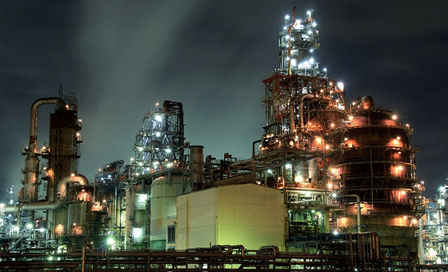

사업소개
사업소개
시멘트

-
1,560만톤
연간 시멘트 생산능력
-
23년 연속
'한국에서 가장 존경받는 기업' 시멘트 산업부문 1위
-
16년 연속
KS-QEI 한국품질만족지수 1위 기업
-
1964년
업계 최초 시멘트 수출 달성
4대 제품군으로 완성하는
시멘트 포트폴리오
-
01
포틀랜드 시멘트
1종 보통부터 5종 내황산염까지 다섯 종류로 구분되는 가장 기본적인 시멘트입니다.
-
02
고로슬래그 시멘트
장기 강도 발현이 우수하고 수화열이 낮아 콘크리트 균열 제어에 유리합니다.
-
03
혼합 시멘트
1종 보통 포틀랜드 시멘트보다 수화열이 30% 정도 낮은 3~4성분계 혼합시멘트입니다.
-
04
고로슬래그 미분말
포틀랜드 시멘트 대체를 통한 경제성 확보, 규산질 비료로도 활용됩니다.
시멘트 제조공정
-
01
원료 채광·분쇄
원료를 채광해 혼합·분쇄, 조합원료(Raw Mix)를 만듭니다.
-
02
소성 (Kiln)
소성로에서 고온으로 녹여 클링커(Clinker)를 생산합니다.
-
03
혼합·분쇄
클링커에 석고를 첨가해 미세하게 분쇄, 시멘트를 완성합니다.
-
04
생산·출하
품질검사를 거쳐 전국 생산거점과 유통망으로 출하됩니다.